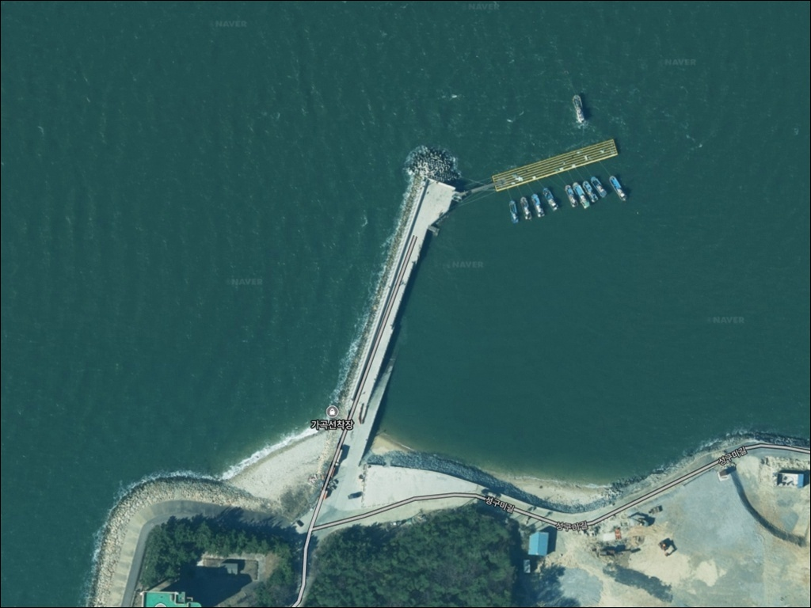
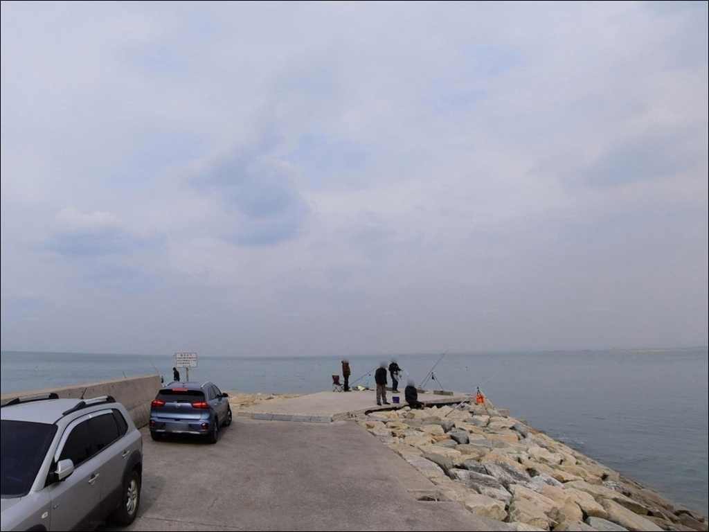
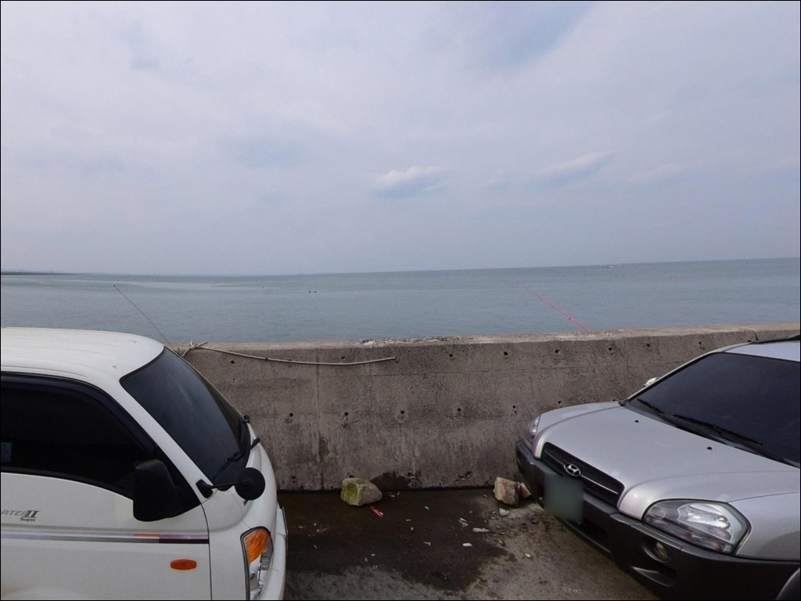
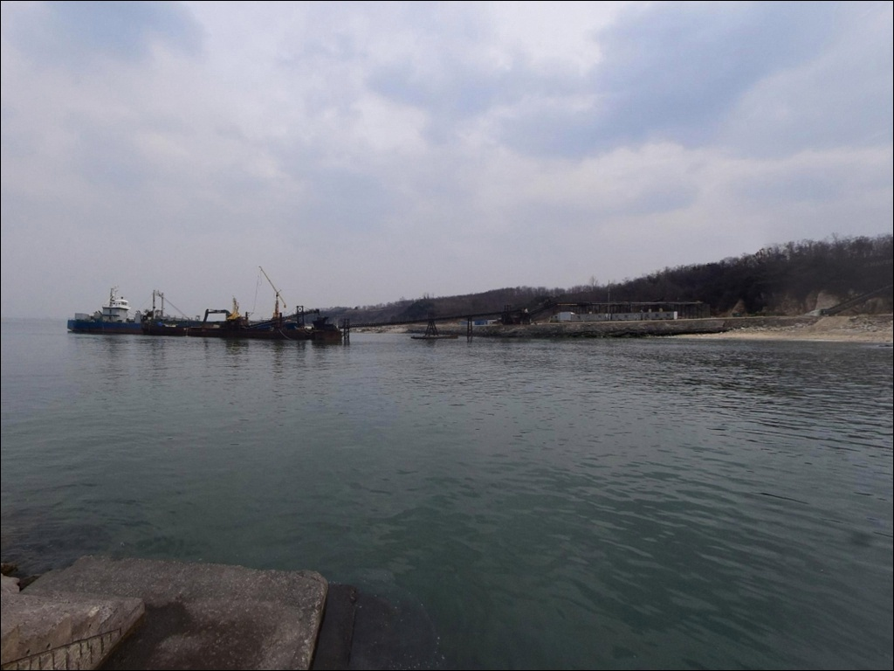
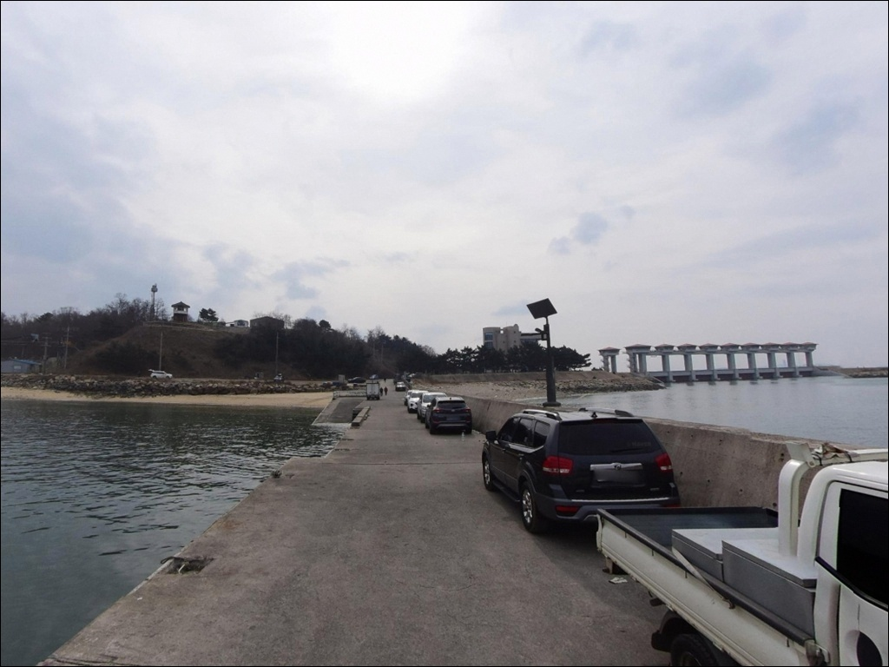
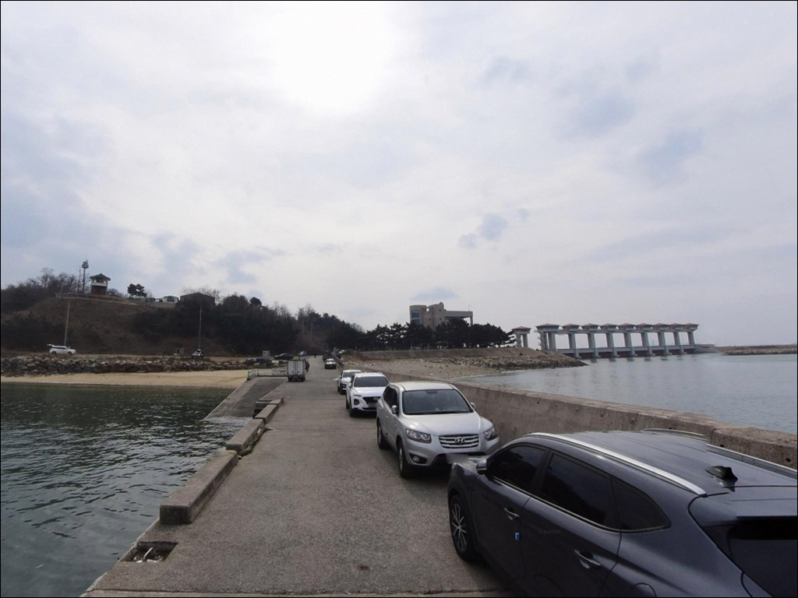
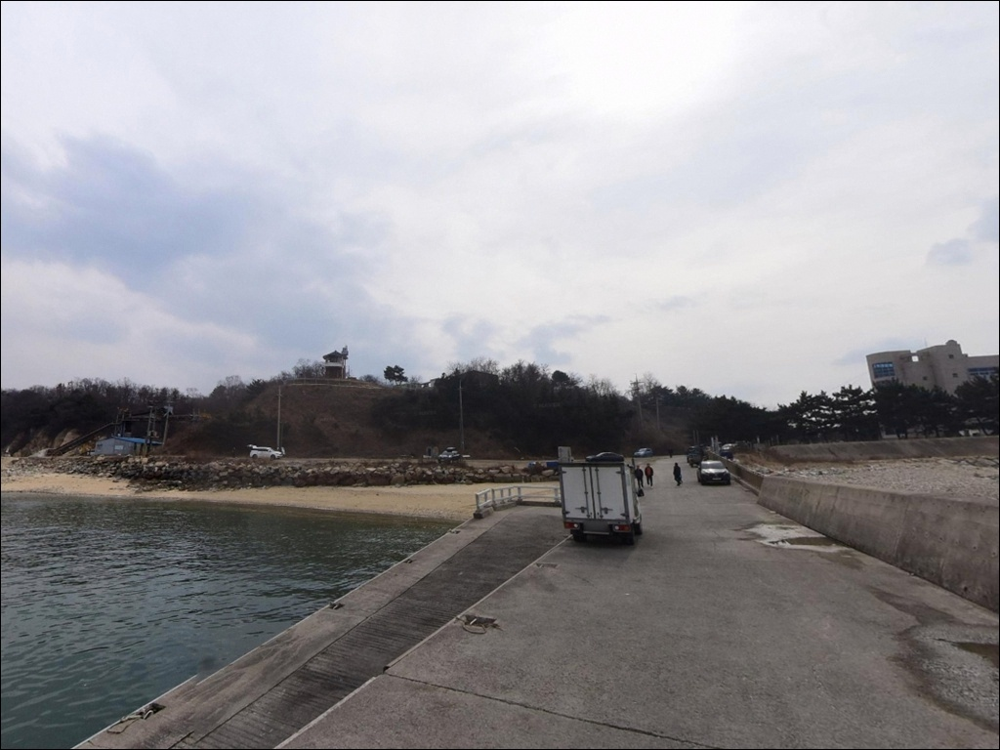
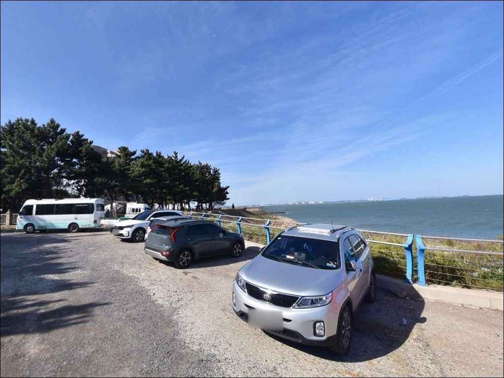
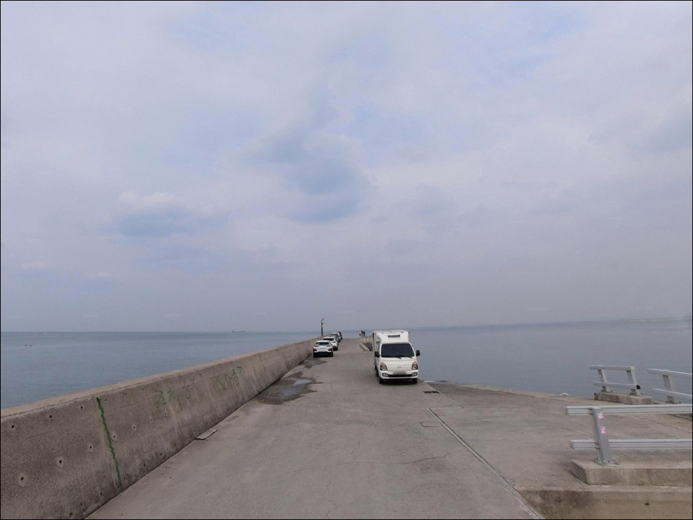

성구미방파제(석문선착장), 충남 당진시 고요함이 매력인 차박, 낚시 감성 장소


포인트 안내
성구미방파제 (가곡선착장)
충남 당진시 송산면 가곡리 528
물때 계산 없이 성구미방파제를 찾아가면
간조에 갯벌이 넓게 드러나
채비를 던질 수면 자체가 사라집니다.
서해 특성상 조수간만의 차가 크고,
방조제 수문 영향이 더해지는 구조라
물때 판단이 조과의 전제 조건인 포인트입니다.
이 글은 성구미방파제의 지형 구조와
물때 기준, 낚시 방식별 공략 조건,
진입 동선에 집중합니다.
조황 단정이나 특정 어종 보장은
이 글의 범위에 포함되지 않습니다.
충남 당진시 송산면 가곡리 528,
석문방조제 초입에 자리한 성구미방파제는
수도권에서 당일치기 출조가 가능한
서해 방파제 낚시 포인트입니다.
178m 길이의 선착장 방파제로
콘크리트 발판이 주를 이루며,
야간 출조 패턴이 많은 곳으로
낚시인들 사이에 알려져 있습니다.

1. 진입 동선과 포인트 접근성
당진 송산산업단지를 통과해
가곡리 마을 끝자락까지 이어지는
포장도로로 접근하는 구조입니다.
산업단지 경유 구간은 주행에 큰 어려움이 없는 편이나,
마을 끝단으로 갈수록 도로 폭이 좁아지는 구간이
있을 수 있어 초행이라면
출발 전 지도로 진입 경로를 먼저 확인하는 편이 좋습니다.
네비게이션으로 주소를 입력할 때
경로에 따라 엉뚱한 방향으로 안내되는 경우가 있습니다.
석문 수문 옆 진입로를 이용하는 경로가
성구미방파제에 닿는 기본 동선이며,
이 경로를 지도에서 미리 확인해두는 것이
헛걸음을 막는 실질적인 준비입니다.
선착장 폭이 3m 수준으로 좁아
차량 교행이 어려운 구간이 있을 수 있습니다.
방파제 앞 공터가 주차 후보 공간으로 활용되는 편이며,
어선 통행 동선을 막지 않는 자리를
우선 확인하고 주차하는 것이 기본입니다.

2. 차박 환경과 야간 체류 여건
성구미방파제는 방파제 앞 공터에 차량을 세우고
야간 낚시를 겸하는 체류 패턴이 많은 곳입니다.
공터 자체는 여러 대 주차가 가능한 수준으로 보이며,
포구 특성상 대형 차량 진입 전에는
현장 표지판과 주차 공간을 먼저 확인하는 것이 순서입니다.
야간 조명은 구간별로 편차가 있는 편입니다.
방파제 끝단으로 갈수록 광원이 부족해지는 구간이 있어
개인 헤드랜턴은 필수입니다.
석문방조제 수문 인근 특성상
바람 방향에 따라 해풍 영향을 받는 날이 있으므로
기상 예보 확인은 출발 당일 아침에 다시 한번 하는 편이 좋습니다.
포구 자체는 소규모 어촌 마을 성격이라
야간 차량 통행이 많지 않은 편입니다.
낚시를 마치고 조용히 하룻밤 머무는 용도로는
나쁘지 않으나, 어선 이동 동선과
인근 어업 활동을 방해하지 않는 자리 선정이
기본 매너입니다.


3. 주변 편의시설 및 인프라 현황
성구미방파제 인근에서
확정할 수 있는 편의시설 정보는 없습니다.
가곡리 일대는 소규모 농어촌 마을과
산업단지가 인접한 지역으로,
반경 3km 내 편의점·식당의 위치는
현장에서 직접 확인이 필요합니다.
식수·얼음·낚시 소품·연료는
출발 전 완비하고 진입하는 편이 안전합니다.
반경 10km권으로 이동하면
석문방조제를 건너 장고항 방면이 있습니다.
장고항은 대규모 방파제와 물양장이 갖춰진 곳으로
수산물 판매와 기본 생활 인프라를 이용할 수 있습니다.
성구미방파제 출조 전 소품을 보충하거나
플랜B 거점으로 활용하기 좋은 방면입니다.

4. 성구미방파제 방문 전 반드시 챙길 준비사항
이 포인트에서 가장 먼저 확인해야 할 것은
물때입니다.
서해 특성상 간조 때는 갯벌이 넓게 드러나며
실질적인 낚시 가능 시간이 크게 줄어듭니다.
바다타임에서 가곡리 기준 물때를 확인하고
만조 전후 2~3시간을 중심으로
출조 시각을 맞추는 것이 기본 전략입니다.
야간 출조를 계획한다면
헤드랜턴과 구명조끼는 출발 전 반드시 챙겨야 합니다.
선착장 폭이 3m로 좁아 야간 이동 시
낙수 위험을 간과하기 쉬운 구조입니다.
테트라포트 구간 이동 전에는
발판 상태와 파도 방향을 먼저 확인하는 것이
이 포인트의 기본 안전 수칙입니다.
선착장은 어선이 오가는 작업 공간입니다.
어선 이동 동선과 어구에 접촉하지 않도록
자리를 잡는 것이 기본 매너이며,
강풍이나 기상 악화 시에는
미련 없이 철수하는 것이 올바른 판단입니다.

5. 지형 기반 낚시 여건 분석
성구미방파제의 핵심은 석문방조제 수문과
인접한 위치 조건입니다.
방조제 수문 방향으로 흐르는 조류가
방파제 외항 쪽 수심 변화를 만들어내며,
방파제 끝단과 테트라포트 주변은
수심이 빨리 깊어지는 구간으로 보입니다.
바닥은 서해 특성상 뻘과 자갈이 혼합된 구조입니다.
선착장 좌측으로 자갈해변이, 우측으로 모래해변이
분리 배치되어 있으며,
뻘 바닥 구간은 밑걸림보다
채비가 뻘에 파묻히는 상황을 주의해야 합니다.
방파제 끝단에서 채비를 멀리 보낸 뒤
조류 흐름이 살아 있는 타이밍을 기다리는 방식이
이 지형에 맞습니다.
석문방조제 축조 이후 과거보다 어족 분포가
달라졌다는 언급이 있습니다.
계절에 따라 회유성 어종의 접근 패턴이 변하는
서해 방조제 인근 포인트 특성을 고려해,
출조 전에 최신 조황은 반드시 직접 검색해 보시기 바랍니다.
원투낚시 채비란 무거운 봉돌을 달아
멀리 캐스팅하는 서해 방파제 낚시 방식입니다.


6. 성구미방파제에서 어울리는 낚시 스타일
이 포인트에 가장 잘 맞는 스타일 중 하나는
원투낚시입니다.
뻘·자갈 혼합 바닥과 방파제 끝단의 수심 조건은
청갯지렁이 미끄럼이나 카드채비를 달아
먼 곳을 공략하는 원투낚시 방식에 어울립니다.
만조 전후 조류가 살아날 때
채비를 멀리 보내는 것이 이 포인트의 기본 패턴입니다.
루어낚시도 방파제 외항 쪽 끝단과
테트라포트 주변을 중심으로 노려볼 수 있습니다.
조류가 흐르는 수문 인근 구간은
워킹 루어나 메탈지그 캐스팅 방식이 잘 맞는 편이며,
여름~가을 시즌에는 회유성 어종의 반응이
올라오는 경향이 있습니다.
서해 서릿발 조류 구간에서는
봉돌 무게를 올려 채비 컨트롤을 먼저 확보하는 것이 중요합니다.
가을 시즌에는 테트라포트 주변을 중심으로
에깅이나 주꾸미 낚시도 시도해볼 수 있습니다.
서해 방파제 특성상 갑오징어와 주꾸미의
시즌 폭이 겹치는 시기가 있어,
에기와 주꾸미 채비를 함께 챙기는 것이
포인트 활용도를 높이는 방식입니다.
야간에는 찌낚시나 소형 루어로
선착장 내항 쪽 잔잔한 수면을 천천히 탐색하는
패턴도 이 포인트에서 많이 이루어집니다.

7. 대안 포인트와 플랜 B 동선
성구미방파제 조황이 기대에 못 미치거나
물때가 맞지 않는다면
석문방조제 중간 석축 구간이
첫 번째 대안입니다.
총 길이 10km가 넘는 대형 방조제 중간마다
여러 포인트가 이어져 있으며,
넓은 주차 공간도 곳곳에 있어
조건에 따라 자리를 옮기기 좋습니다.
석문방조제를 건너 장고항 방면으로 이동하면
규모가 훨씬 큰 방파제와 물양장이 있습니다.
주차, 편의시설, 낚시 여건이 모두 갖춰진 곳으로
성구미방파제에서 출발해
장고항을 플랜B 거점으로 묶어 이동하는 동선이
이 권역을 효율적으로 도는 방법입니다.
인근 한진포구는 소규모 방파제 구조로
찌낚시와 야간 낚시 패턴에 잘 맞는 곳입니다.
성구미방파제와 분위기가 비슷하지만
접근 조건이 다를 수 있어,
바람 방향과 물때를 비교해
그날 여건에 맞는 포인트를 선택하는 방식이 좋습니다.

물때와 조류를 알면
성구미방파제가 달라 보입니다
원투낚시나 루어낚시를 즐기는 낚시인 중
수도권 당일치기 서해 방파제를 찾는다면
성구미방파제는 검토해볼 만한 포인트입니다.
178m 선착장 방파제 구조에서
복수의 낚시 방식을 시도할 수 있고,
야간 출조 패턴이 뿌리내린 곳이기도 합니다.
반면 물때 계산 없이 찾아가거나
진입 경로를 사전에 확인하지 않으면
간조 갯벌 앞에서 낚시를 포기하거나
길을 잘못 들어 시간을 허비하는 상황을
맞닥뜨릴 수 있습니다.
물때 확인, 네비 경로 점검, 야간 조명·구명조끼 준비,
이 세 가지가 갖춰진 날이
이 포인트를 제대로 공략하는 출조입니다.
야간 석문방조제 초입 물소리 옆에 차를 세우고
원투 채비 하나를 멀리 던져두는 낚시라면,
성구미방파제는 그 분위기에 맞는 서해 포인트입니다.